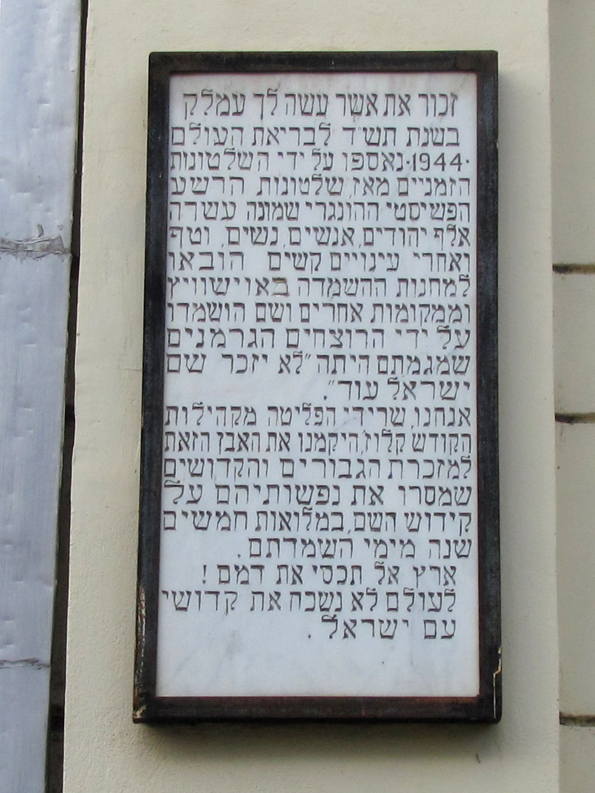

DE NEOLOG-SYNAGOGE Omdat er zo veel verschillende religies zijn in Cluj-Napoca, vind je er ook veel verschillende soorten kerken. De laatste kerk die je niet mag missen is de Neolog Synagoge. Dit is een joodse kerk die werd gebouwd in 1886. De synagoge is van de buitenkant mooi om te zien en ook de straat waar de kerk ligt, heeft mooie architectuur. via Reismonkey
Salina Turda is an impressive salt mine, converted into a super-impressive underground world located around 35km (21 miles) outside of Cluj-Napoca. It opened in 1992 and renovated in 2008, it has since been visited by over 2 million tourists and was even referred to as one of the “Coolest Underground Places in the world” by Business Insider. The site descends over 112 meters (368ft) underground and is an impressive combination of traditional mining equipment, tight passes and expansive domes and even features a huge underground lake. via Clujxyz